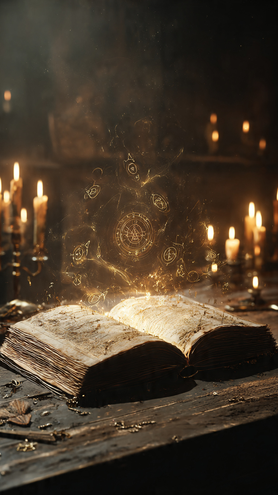
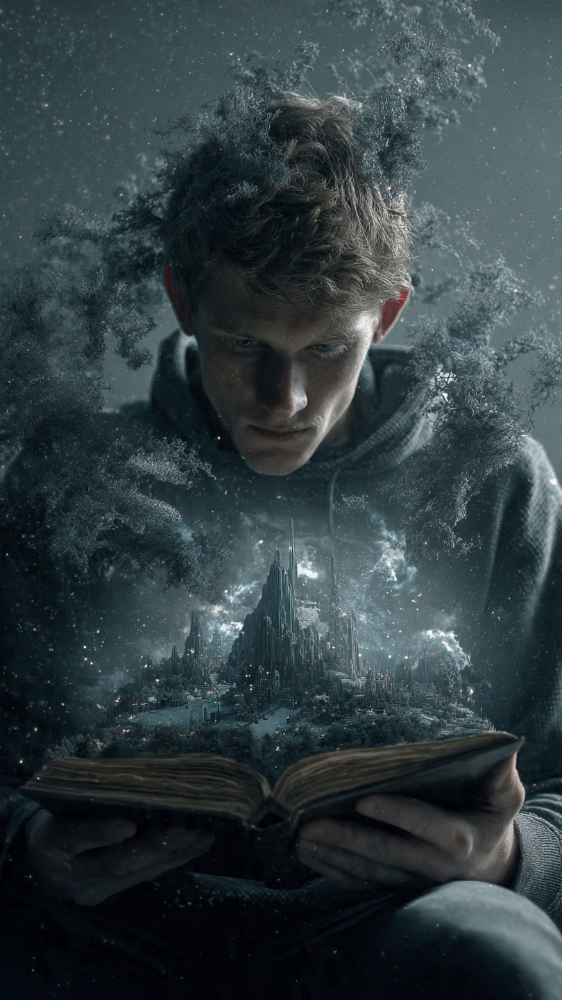

في مدينة قديمة تشتهر بمكتباتها العريقة، كان الناس يتناقلون أسطورة غريبة.
كانوا يقولون إن هناك كتابًا لا يبقى في مكان واحد.
يختفي من مكتبة...
ليظهر في أخرى.
ولا أحد يعرف من كتبه، أو متى صُنِع.
وكان عنوانه مكتوبًا بحروف ذهبية باهتة:
"النهاية الأخيرة".
لكن أكثر ما أثار الرعب حوله، لم يكن شكله...
بل ما يحدث لمن يقرأه.
فكل شخص يفتح صفحاته، يجد أن الفصل الأخير يحمل اسمه.
وبعد أيام قليلة...
تبدأ حياته تتغير، وكأن شخصًا خفيًا يعيد كتابة مصيره.
كان معظم الناس يظنون أنها مجرد خرافة.
إلا شابًا يُدعى يوسف.
كان يعمل في ترميم الكتب القديمة، ويعشق اكتشاف المخطوطات النادرة.
وفي إحدى الليالي، بينما كان يرتب صندوقًا مليئًا بالكتب التي وصلت حديثًا إلى المكتبة، لفت انتباهه كتاب أسود لم يكن ضمن السجل.
لم يحمل اسم مؤلف.
ولا تاريخ نشر.
ولا حتى رقمًا في الفهرس.
فتح يوسف الغلاف بحذر.
كانت الصفحات الأولى فارغة.
ثم بدأت الكلمات تظهر ببطء أمام عينيه، وكأنها تُكتب في تلك اللحظة.
قرأ الجملة الأولى:
"إذا وصلت إلى هذه الصفحة... فقد بدأت قصتك الجديدة."
ارتجف قليلًا.
لكنه أكمل القراءة.
بعد عدة صفحات، وجد وصفًا دقيقًا لحياته.
اسمه.
وعمله.
وحتى الحوار الذي دار بينه وبين زميله في الصباح.
رفع رأسه بسرعة.
شعر أن الأمر مستحيل.
أغلق الكتاب فورًا.
لكنه لاحظ أن الصفحة الأخيرة لم تكن مكتملة.
وكانت تنتهي بجملة واحدة فقط:
"أما النهاية... فلم تُكتب بعد."
في صباح اليوم التالي، بدأ كل شيء يتغير.
التقى بشخص لم يره من قبل، لكنه كان يعرف اسمه.
ثم وجد رسالة قديمة في منزله، لم يتذكر أنه رآها من قبل.
وبداخلها خريطة صغيرة تقوده إلى مبنى مهجور في أطراف المدينة.
كان المكان نفسه مرسومًا في الكتاب.
تمامًا كما رآه الليلة الماضية.
قرر يوسف أن يتبع الخريطة.
وعندما وصل إلى المبنى المهجور، وجد بابًا خشبيًا قديمًا مفتوحًا.
وفي الداخل...
كانت هناك مكتبة ضخمة، مليئة بآلاف النسخ من الكتاب نفسه.
لكن الغريب...
أن كل نسخة كانت تحمل اسم شخص مختلف.
وفجأة، انطفأت الأنوار.
وسمع صوتًا هادئًا يقول من بين الرفوف:
"مرحبًا بك...لقد حان وقت كتابة نهايتك."
📷 الصورة رقم 1

تجمد يوسف في مكانه عندما سمع الصوت يخرج من بين الرفوف.
كان هادئًا، لكنه يحمل هيبة غريبة جعلت القاعة تبدو وكأنها صامتة منذ قرون.
ثم ظهرت من الظلام شخصية رجل مسن، يرتدي عباءة داكنة ويحمل قلمًا طويلًا مصنوعًا من الفضة.
اقترب ببطء وقال:
"لا تخف."
"أنا لست من يكتب النهايات..."
"أنا فقط أحرسها."
نظر يوسف حوله.
كانت آلاف الكتب تمتد حتى نهاية القاعة.
كل كتاب يحمل اسم شخص.
بعض الأسماء كانت قديمة جدًا، وبعضها لأشخاص ما زالوا على قيد الحياة.
قال يوسف بدهشة:
"هل هذه كتب عن حياة الناس؟"
ابتسم الرجل وأجاب:
"ليست عن حياتهم..."
"بل عن الاحتمالات التي يمكن أن يعيشوها."
"كل قرار يتخذه الإنسان يكتب فصلًا جديدًا."
"ولهذا لا يوجد كتابان متشابهان."
اقترب يوسف من أحد الرفوف.
وسحب كتابًا يحمل اسمًا لا يعرفه.
فتح الصفحة الأخيرة.
فوجدها فارغة.
قال الحارس:
"لأن صاحب هذا الكتاب لم يصل إلى نهايته بعد."
ثم أشار إلى كتاب يوسف.
وأضاف:
"لكن كتابك بدأ يكتب نفسه منذ أن فتحته."
شعر يوسف بالقلق.
وقال:
"إذن... هل مستقبلي محدد؟"
هز الحارس رأسه.
وقال:
"لا."
"لكن كل مرة تحاول فيها معرفة النهاية قبل أوانها..."
"تضيق أمامك طرق الاختيار."
وفجأة بدأت الكتب تهتز فوق الرفوف.
وتطايرت الصفحات في الهواء.
ثم ظهرت كلمات مضيئة تدور حول يوسف.
كانت تعرض مشاهد من مستقبله.
نجاحًا كبيرًا.
ثم خسارة.
ثم رحلة طويلة.
ثم ظلامًا يغطي كل شيء.
اختفت المشاهد بسرعة كما ظهرت.
سأل يوسف بارتباك:
"أيها سيحدث؟"
أجاب الحارس:
"كلها..."
"أو لا شيء منها."
"الأمر يعتمد على القرار الذي ستتخذه الآن."
ثم سار نحو باب حجري قديم في نهاية القاعة.
فتح الباب.
وفي الداخل كانت توجد غرفة دائرية، تتوسطها منضدة عليها كتاب واحد فقط.
كان أكبر من جميع الكتب الأخرى.
وغلافه من الذهب الخالص.
قال الحارس بصوت منخفض:
"هذا هو الكتاب الأول."
"الكتاب الذي تُكتب منه جميع القصص."
"لكن لا يحق لأحد قراءته."
وقبل أن يمنع يوسف...
فتحت الرياح الصفحة الأولى وحدها.
وانطلقت من الكتاب أضواء بيضاء غمرت المكان.
ثم بدأت الجدران تختفي.
وسمع يوسف صوتًا عميقًا يقول:
"من يقرأ البداية...يجب أن يختار النهاية."
📷 الصورة رقم 2

غمرت الأضواء البيضاء القاعة كلها، ولم يعد يوسف يرى شيئًا سوى صفحات تتطاير حوله كأنها طيور من نور.
ثم وجد نفسه يقف في مكان لا يشبه أي مكتبة.
كانت الأرض مغطاة بصفحات بيضاء لا نهاية لها، والسماء تبدو كأنها كتاب مفتوح، تتغير كلماته باستمرار.
وفي منتصف ذلك المكان، كانت هناك منصة حجرية، فوقها الكتاب الذهبي العملاق.
اقترب يوسف ببطء، ولاحظ أن صفحاته تكتب نفسها دون أن يمسها أحد.
كل ثانية تظهر أسماء جديدة.
وقصص جديدة.
ونهايات جديدة.
ظهر الحارس بجانبه وقال:
"هذا هو كتاب البدايات."
"منه تبدأ كل قصة."
"لكنه لا يقرر مصير أحد."
"إنه يكتب ما يختاره البشر بأنفسهم."
نظر يوسف إلى الكتاب بدهشة وقال:
"لكنني رأيت مستقبلي داخله."
ابتسم الحارس وقال:
"رأيت احتمالًا..."
"وليس حقيقة."
في تلك اللحظة، انقلبت الصفحات بسرعة.
ثم توقفت عند صفحة تحمل اسم يوسف.
قرأ السطر الأخير.
فوجد مكتوبًا:
"سينهي القصة... إذا صدق أنها انتهت."
صمت للحظة.
ثم فهم المعنى.
الخطر لم يكن في الكتاب...
بل في استسلام الإنسان لفكرة أن مصيره مكتوب ولا يمكن تغييره.
أغلق يوسف الكتاب برفق.
وقال للحارس:
"لن أبحث عن نهايتي بعد اليوم."
"سأعيشها عندما تأتي."
ابتسم الحارس لأول مرة.
وقال:
"لهذا السبب فقط..."
"وصلت إلى هنا."
ثم مد إليه القلم الفضي.
لكن يوسف أعاده إليه بلطف.
وقال:
"لا أريد أن أكتب المستقبل."
"أريد أن أصنعه."
وفجأة بدأت القاعة تهتز.
تحولت الصفحات البيضاء إلى أسراب من الطيور المضيئة.
واختفت المنصة الحجرية.
وأغلق الكتاب الذهبي نفسه للمرة الأخيرة.
قال الحارس:
"لقد نجحت في الاختبار."
"قلة قليلة فقط غادرت هذا المكان دون أن تحاول تغيير مصيرها."
ثم فتح بابًا من الضوء.
عاد يوسف إلى مكتبته.
كانت الساعة تشير إلى الوقت نفسه الذي دخل فيه المبنى المهجور، وكأن شيئًا لم يحدث.
لكن على مكتبه وجد ورقة صغيرة.
لم يكن مكتوبًا عليها سوى جملة واحدة:
"كل يوم صفحة جديدة...فاحرص أن تكتبها بأفعالك، لا بخوفك."
ابتسم يوسف.
وأغلق المكتبة في ذلك المساء وهو يشعر براحة لم يشعر بها من قبل.
ومنذ ذلك اليوم، لم يحاول أحد العثور على الكتاب مرة أخرى.
لكن يُقال إنه ما زال يظهر أحيانًا...
لمن ينسى أن المستقبل لا يُقرأ...
بل يُصنع.